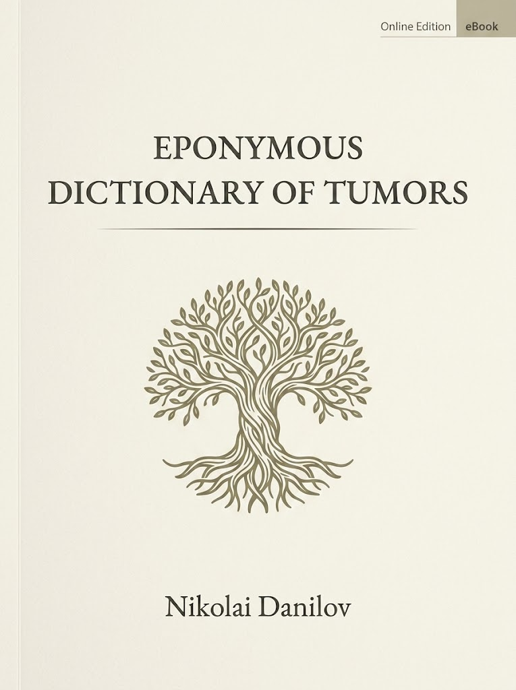

Preface
v. 1.0

{kind=link}
© 2026 Nikolai Danilov (DocNikDS). All rights reserved. First digital edition (v. 1.0) published on 17 August 2026.
Welcome!
The Eponymous Dictionary of Tumors is a selective historical-medical reference devoted to eponymous tumor entities and tumor-related concepts that have entered the language of oncology. It is intended for oncologists, pathologists, cancer epidemiologists, historians of medicine, other specialists, and students, who need a compact, reliable guide to the persons behind the names and the entities those names designate.
The dictionary uses the word “tumor” in a deliberately broad historical-pathological sense: not only malignant and benign neoplasms, but also non-neoplastic space-occupying lesions that have traditionally been called tumors, such as Pott puffy tumor.
The dictionary is intended as a living digital publication, designed to be updated and corrected. By bringing together concise, verifiable, and uniquely discriminative definitions, together with biographical notes and, where possible, images, it aims to preserve the eponymic memory in oncology and to make it accessible to contemporary readers without requiring access to expensive proprietary resources.
Scope and selectivity
The Eponymous Dictionary is intentionally selective. It includes only those eponyms that belong explicitly and recognizably to the core domain of oncology, though in its broadest sense. Eponyms that belong primarily to other disciplines, or that are only loosely connected with tumors, are not included unless their tumor connection is central.
Congenital/hereditary syndromes
In this dictionary, hereditary and congenital syndromes are not included merely because they carry an increased risk of cancer; they are included only when the neoplastic predisposition is a defining, cardinal feature of the syndrome—not an associated or “notable” risk, however important its tumor association may be in clinical practice. This rule keeps the dictionary focused on tumors as the core of the eponym a broader genetic or dysmorphic conditions.
Dates and places
Birth and death dates are given according to the Gregorian calendar only—an issue especially relevant for figures from, e.g., the former Russian Empire, where the Julian calendar (the “Old Style”) was in official use until 1918, thus keeping calendar discrepancy with the Western world for centuries.
Whenever possible, the places of birth and/or death of a person are given along with his/her dates. The names of those cities, towns, villages, etc. and their administrative belonging are given according to today’s state borders, officially recognized by international law. For example, “Bratislava, Slovakia” is used, not “Pressburg, Austrian-Hungarian Empire.”
Personal identity
A person’s origin and professional identity are stated neutrally and, wherever feasible, in no more than a few words; articles (“a,” “the”) are omitted unless essential.
The dictionary follows an ethnic and modern nation-state approach. For example, “Jewish American physician.” Although this may sound anachronistic, it provides a consistent practical framework for categorizing historical figures in a way that is accessible to contemporary readers and avoids shifting attention and credit from national to imperial identities, thus preserving cultural diversity.
Alphabetization and particles
In the Eponymous Dictionary, possessive or nobiliary prefix particles in complex surnames (e.g., de, d’, di, von, van, etc.) are disregarded in both the entry headings and the alphabetical order of surnames in the Index. Thus, to locate a figure in the dictionary, one should search by the core surname itself (e.g., VINCI, not DA VINCI).
Hyphenation of given names
In this dictionary, all component elements of a person’s given name are connected with hyphens (e.g., “Jean-Octave-Albert Demons”) rather than left as separate words. It is adopted as a deliberate editorial measure to eliminate any ambiguity between complex given names and surnames—a problem that arises frequently in multilingual historical sources and can be especially acute when a surname resembles a given name. This hyphenation follows a convention observed in some French scholarly texts and is applied uniformly throughout the volume, in the service of clarity and the precise identification of the individuals honored by the eponyms.
Images
Unless otherwise noted, the portraits and microphotographs in this dictionary are used under Public Domain or Creative Commons Zero (PD/CC0) licenses. We gratefully acknowledge the contributors to repositories for supporting global open-access education.
Feedback from readers
This is an evolving digital-publishing project, and with your help we can make it even better.
At the end of each dictionary entry you’ll find a “magical” feedback link. Clicking the link takes you to an online feedback form where you can share your thoughts with the dictionary’s editor. We welcome any and all feedback or suggestions for improvement you may have. Please feel free to be as terse or detailed as you see fit. All feedback is stored anonymously, but you can choose to leave your name and contact information so we can follow up or mention you on our “Acknowledgements” section.
Thank you for helping us make this book an even more valuable reference resource for our readers’ community.
Abbreviations used
b. — born Syn. — synonym(s)